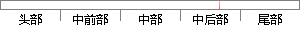

如果在分层设计时，遵循了面向接口设计的思想，那么这种向下的依赖也应该是一种弱依赖关系。
片段位置图

相似结果|
相似片段 1：中间，起到了数据交换中承上启下的作用。由于层是一种弱耦合结构，层与层之间的依赖是向下的，底层对于上层而言是“无知”的，改变上层的设计对于其调用的底层而言没有任何影响。如果在分层设计时，遵循了面向接口设计的思想，那么这种向下的依赖也应该是一种弱依赖关系。
相似片段 2：的，底层对于上层而言是“无知"的，改变上层的设计对于其调用的底层而言没有任何影响。如果在分层设计时，遵循了面向接口设计的思想，那么这种向下的依赖也应该是一种弱依赖关系。因而在不改变接口定义的前提下，理想的分层式架构，应该是一个支持可抽取、可替换的“抽屉”式架构。
相似片段 3：的，底层对于上层而言是“无知”的，改变上层的设计对于其调用的底层而言没有任何影响。如果在分层设计时，遵循了面向接口设计的思想，那么这种向下的依赖也应该是一种弱依赖关系。因而在不改变接口定义的前提下，理想的分层式架构，应该是一个支持可抽取、可替换的“抽屉”式架构。
相似片段 4：，层与层之间的依赖是向下的，底层对于上层而言是“无知"的，改变上层的设计对于其调用的底层而言没有任何影响。如果在分层设计时，遵循了面向接口设计的思想，那么这种向下的依赖也应该是一种弱依赖关系。因而在不
相似片段 5：如果在分层设计时，遵循了面向接El设计的思想，那么这种向下的依赖也应该是一种弱依赖关系。因而在不改变接口定义的前提下，理想的分层式架构，应该是一个支持可抽取、可替换的“抽屉”式架构。正因为如此，业务
相似片段 6：其调用的底层而言没有任何影响 ]38[ 。如果在分层设计时，遵循了面向接口设计的思想，那么这种向下的依赖也应该是一种弱依赖关系。因而在不改变接口定义的前提下，理想的分层式架构，应该是一个支持可抽取、可
相似片段 7：由于层是一种弱耦合结构，层与层之间的依赖是向下的，底层对于上层而言是“无知”的，改变上层的设计对于其调用的底层而言没有任何影响。如果在分层设计时，遵循了面向接口设计的思想，那么这种向下的依赖也应该是
相似片段 8：由于层是一种弱耦合结构，层与层之间的依赖是向下的，底层对于上层而言是“无知”的，改变上层的设计对于其调用的底层而言没有任何影响。如果在分层设计时，遵循了面向接口设计的思想，那么这种向下的依赖也应该是
相似片段 9：由于层是一种弱耦合结构，层与层之间的依赖是向下的，底层对于上层而言是“无知”的，改变上层的设计对于其调用的底层而言没有任何影响。如果在分层设计时，遵循了面向接口设计的思想，那么这种向下的依赖也应该是
相似片段 10：维护，具有较好的扩展性。由于层是一种弱耦合结构，层与层之间的依赖是向下的，底层对于上层而言是“无知”的，改变上层的设计对于其调用的底层而言没有任何影响。如果在分层设计时，遵循了面向接口设计的思想，那么
|
※ 片段修改建议 ※
近似词参考：- 设计：计划
- 遵循：遵守 遵照
- 设计：计划
- 思想：思惟 头脑
- 那么：那末
- 这种：这类
- 依赖：依靠
- 依赖：依靠
- 关系：干系 瓜葛
系统自动生成语句：如果在分层计划时，遵守了面向接口计划的思惟，那末这类向下的依靠也应该是一种弱依靠干系。
注：本片段修改建议为系统自动生成，仅供参考。